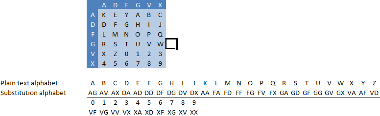

The ADFGVX cipher consists of a sequence (cascade) of two ciphers, a substitution and a transposition. This cipher was used by the Germans in World War I, but deciphered by French analytics soon after its deployment in the German communication.
The ADFGVX cipher is a compound algorithm and consists of a digraph substitution and a simple column transposition.
The ADFGVX cipher is a monoalphabetic substitution cipher in its first part (the other part is a simple transposition). The substitution alphabet contains all pairs of the letters “A, D, F, G, V, X”, thus contains exactly 36 elements. This means, that the plaintext alphabet cannot contain more than 36 elements, and, that every character from the plaintext will be replaced by two characters at the encryption.
As in every substitution algorithm, the substitution alphabet is the key. To create the alphabet, the so-called ADFGVX matrix is filled with the content of the plaintext alphabet (or with a more or less short key word and then with the rest of the alphabet – in the example it is the keyword “KEY”):

A sample substitution of the text „ATTACKATMIDNIGHT“ with the keyword „KEY“ (see ADFGVX matrix / substitution table above)
After the substitution, a simple transposition step is applied using a separate key. See the article on the transposition cipher for this.
If a transposition was performed in addition to the ADFGVX substitution, then this has be undone first.
The substitution alphabet can be created from the key with the ADFGVX matrix again, and the ciphertext can be substituted back. This is done by splitting the text into blocks of two, and substituting each block of two (A/D/F/G/V/X pair) back to the former plaintext alphabet.